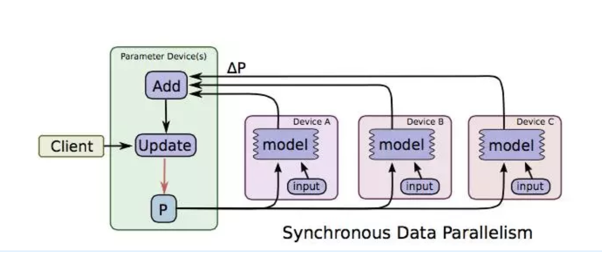
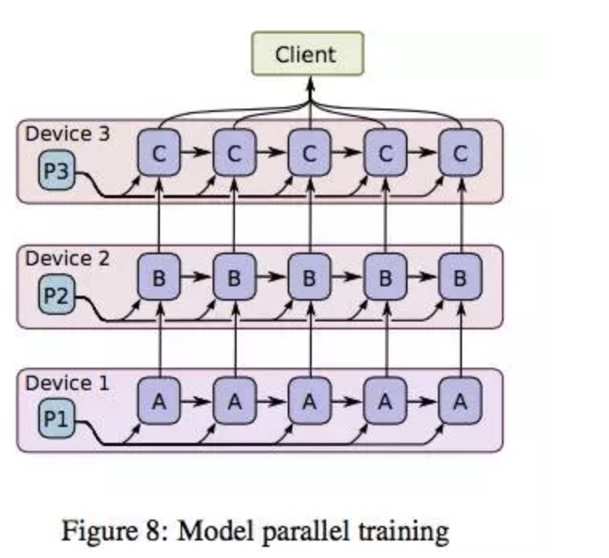
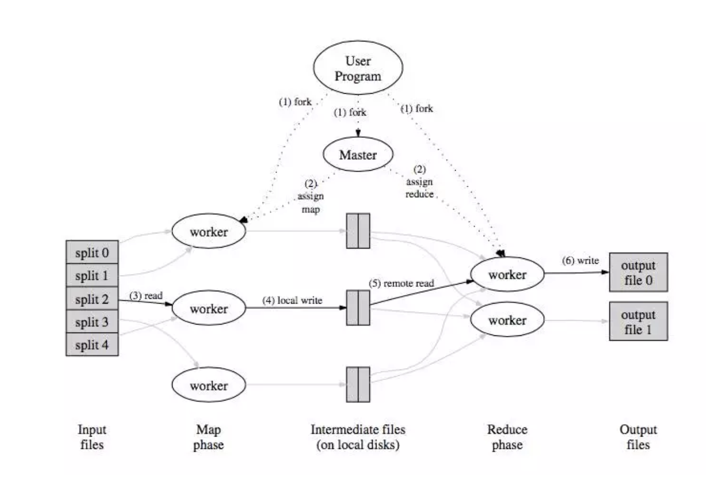
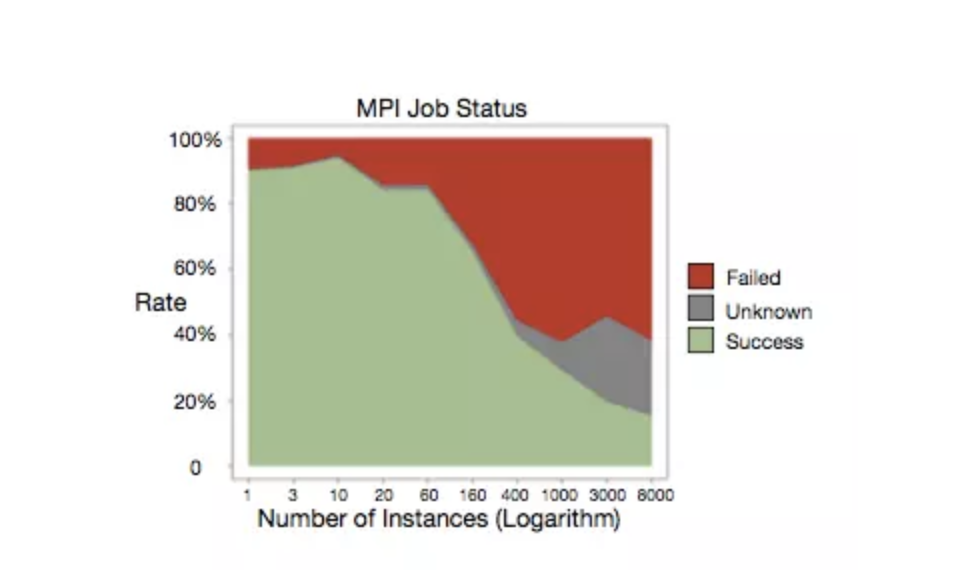
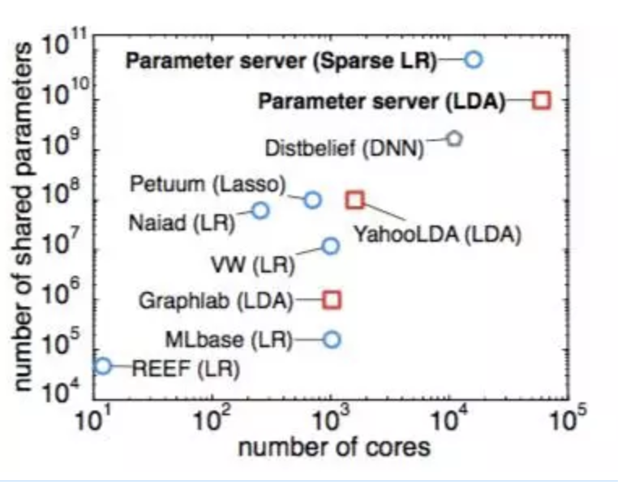
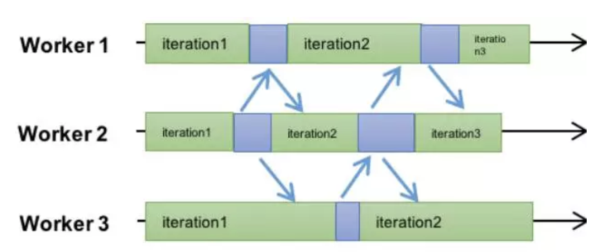
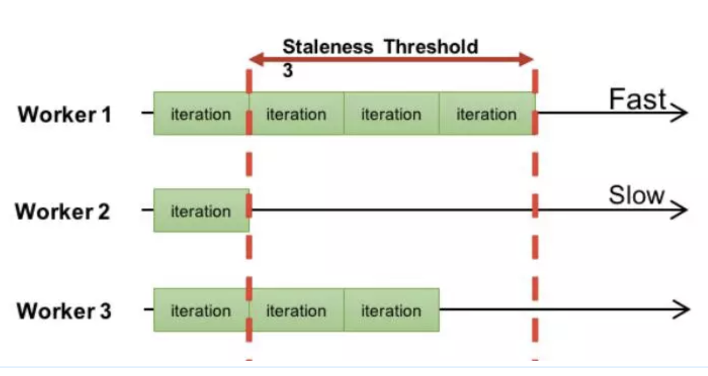
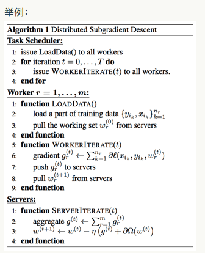
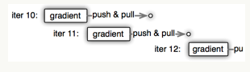
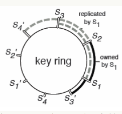

[toc]
parameter server技术内幕
深入解析parameter server架构设计与实现原理
第一章 回顾分布式机器学习的历史进程
1.背景
自从 google 发表著名的 GFS、MapReduce、BigTable 三篇 paper 以后，互联网正式迎来了大数据时代。大数据的显著特点是大，哪里都大的大。本篇主要针对 volume 大的数据时，使用机器学习来进行数据处理过程中遇到的架构方面的问题做一个系统的梳理。
有了 GFS 我们有能力积累海量的数据样本，比如在线广告的曝光和点击数据，天然具有正负样本的特性，累积一两个月往往就能轻松获得百亿、千亿级的训练样本。这样海量的样本如何存储？用什么样的模型可以学习海量样本中有用的 pattern？这些问题不止是工程问题，也值得每个做算法的同学去深入思考。
1.1 简单模型 or 复杂模型
在深度学习概念提出之前，算法工程师手头能用的工具其实并不多，就 LR、SVM、感知机等寥寥可数、相对固定的若干个模型和算法；那时候要解决一个实际的问题，算法工程师更多的工作主要是在特征工程方面。而特征工程本身并没有很系统化的指导理论（至少目前没有看到系统介绍特征工程的书籍），所以很多时候特征的构造技法显得光怪陆离，是否有用也取决于问题本身、数据样本、模型以及运气。
在特征工程作为算法工程师主要工作内容的时候，构造新特征的尝试往往很大部分都不能在实际工作中发挥作用。据我了解，国内几家大公司在特征构造方面的成功率在后期一般不会超过 20%。也就是 80% 的新构造特征往往并没什么正向提升效果。如果给这种方式起一个名字的话，大概是简单模型 + 复杂特征。简单模型说的是算法比如 LR、SVM 本身并不复杂，参数和表达能力基本呈现一种线性关系，易于理解。复杂特征则是指特征工程方面不断尝试使用各种奇技淫巧构造的可能有用、可能没用的特征，这部分特征的构造方式可能会有各种 trick，比如窗口滑动、离散化、归一化、开方、平方、笛卡尔积、多重笛卡尔积等等；顺便提一句，因为特征工程本身并没有特别系统的理论和总结，所以初入行的同学想要构造特征就需要多读 paper，特别是和自己业务场景一样或类似的场景的 paper，从里面学习作者分析、理解数据的方法以及对应的构造特征的技法；久而久之，有望形成自己的知识体系。
深度学习概念提出以后，人们发现通过深度神经网络可以进行一定程度的表示学习（representation learning）。例如在图像领域，通过 CNN 提取图像 feature 并在此基础上进行分类的方法，一举打破了之前算法的天花板，而且是以极大的差距打破。这给所有算法工程师带来了新的思路，既然深度学习本身有提取特征的能力，干嘛还要苦哈哈的自己去做人工特征设计呢？
深度学习虽然一定程度上缓解了特征工程的压力，但这里要强调两点：
-
缓解并不等于彻底解决，除了图像这种特定领域，在个性化推荐等领域，深度学习目前还没有完全取得绝对的优势。究其原因，可能还是数据自身内在结构的问题，使得在其他领域目前还没有发现类似图像+CNN 这样的完美 comple。
-
深度学习在缓解特征工程的同时，也带来了模型复杂、不可解释的问题。算法工程师在网络结构设计方面一样要花很多心思来提升效果。概括起来，深度学习代表的简单特征 + 复杂模型是解决实际问题的另一种方式。
两种模式孰优孰劣还难有定论，以点击率预测为例，在计算广告领域往往以海量特征 +LR 为主流，根据 VC 维理论，LR 的表达能力和特征个数成正比，因此海量的 feature 也完全可以使 LR 拥有足够的描述能力。而在个性化推荐领域，深度学习刚刚萌芽，目前 google play 采用了 WDL 的结构 [1]，youtube 采用了双重 DNN 的结构 [2]。
不管是那种模式，当模型足够庞大的时候，都会出现模型参数一台机器无法存放的情况。比如百亿级 feature 的 LR 对应的权重 w 有好几十个 G，这在很多单机上存储都是困难的，大规模神经网络则更复杂，不仅难以单机存储，而且参数和参数之间还有逻辑上的强依赖；要对超大规模的模型进行训练势必要借用分布式系统的技法，本文主要是系统总结这方面的一些思路。
1.2 数据并行 vs 模型并行
数据并行和模型并行是理解大规模机器学习框架的基础概念，其缘起未深究，第一次看到是在姐夫（Jeff Dean）的 blog 里，当时匆匆一瞥，以为自己懂了。多年以后，再次开始调研这个问题的时候才想起长者的教训，年轻人啊，还是图样，图森破。如果你和我一样曾经忽略过这个概念，今天不妨复习一下。
这两个概念在 [3] 中沐帅曾经给出了一个非常直观而经典的解释，可惜不知道什么原因，当我想引用时却发现已经被删除了。我在这里简单介绍下这个比喻：如果要修两栋楼，有一个工程队，怎么操作？第一个方案是将人分成两组，分别盖楼，盖好了就装修；第二种做法是一组人盖楼，等第一栋楼盖好，另一组装修第一栋，然后第一组继续盖第二栋楼，改完以后等装修队装修第二栋楼。乍一看，第二种方法似乎并行度并不高，但第一种方案需要每个工程人员都拥有“盖楼”和“装修”两种能力，而第二个方案只需要每个人拥有其中一种能力即可。第一个方案和数据并行类似，第二个方案则道出了模型并行的精髓。
数据并行理解起来比较简单，当样本比较多的时候，为了使用所有样本来训练模型，我们不妨把数据分布到不同的机器上，然后每台机器都来对模型参数进行迭代，如下图所示。

图片取材于 TensorFlow 的 paper[4]，图中 ABC 代表三台不同的机器，上面存储着不同的样本，模型 P 在各台机器上计算对应的增量，然后在参数存储的机器上进行汇总和更新，这就是数据并行。先忽略 synchronous，这是同步机制相关的概念，在第三节会有专门介绍。
数据并行概念简单，而且不依赖于具体的模型，因此数据并行机制可以作为框架的一种基础功能，对所有算法都生效。与之不同的是，模型并行因为参数间存在依赖关系（其实数据并行参数更新也可能会依赖所有的参数，但区别在于往往是依赖于上一个迭代的全量参数。而模型并行往往是同一个迭代内的参数之间有强依赖关系，比如 DNN 网络的不同层之间的参数依照 BP 算法形成的先后依赖），无法类比数据并行这样直接将模型参数分片而破坏其依赖关系，所以模型并行不仅要对模型分片，同时需要调度器来控制参数间的依赖关系。而每个模型的依赖关系往往并不同，所以模型并行的调度器因模型而异，较难做到完全通用。关于这个问题，CMU 的 Erix Xing 在 [5] 中有所介绍，感兴趣的可以参考。
模型并行的问题定义可以参考姐夫的 [6]，这篇 paper 也是 tensorflow 的前身相关的总结，其中如下图：

解释了模型并行的物理图景，当一个超大神经网络无法存储在一台机器上时，我们可以切割网络存到不同的机器上，但是为了保持不同参数分片之间的依赖，如图中粗黑线的部分，则需要在不同的机器之间进行 concurrent 控制；同一个机器内部的参数依赖，即图中细黑线部分在机器内即可完成控制。
黑线部分如何有效控制呢？如下图所示：

在将模型切分到不同机器以后，我们将参数和样本一起在不同机器间流转，图中 ABC 代表模型的不同部分的参数；假设 C 依赖 B，B 依赖 A，机器 1 上得到 A 的一个迭代后，将 A 和必要的样本信息一起传到机器 2，机器 2 根据 A 和样本对 P2 更新得到，以此类推；当机器 2 计算 B 的时候，机器 1 可以展开 A 的第二个迭代的计算。了解 CPU 流水线操作的同学一定感到熟悉，是的，模型并行是通过数据流水线来实现并行的。想想那个盖楼的第二种方案，就能理解模型并行的精髓了。

上图则是对控制模型参数依赖的调度器的一个示意图，实际框架中一般都会用 DAG（有向无环图）调度技术来实现类似功能，未深入研究，以后有机会再补充说明。
理解了数据并行和模型并行对后面参数服务器的理解至关重要，但现在让我先荡开一笔，简单介绍下并行计算框架的一些背景信息。
2.并行算法演进
2.1 MapReduce 路线
从函数式编程中受到启发，Google 发布了 MapReduce[7] 的分布式计算方式；通过将任务切分成多个叠加的 Map+Reduce 任务，来完成复杂的计算任务，示意图如下：

MapReduce 的主要问题有两个，一是原语的语义过于低级，直接使用其来写复杂算法，开发量比较大；另一个问题是依赖于磁盘进行数据传递，性能跟不上业务需求。
为了解决 MapReduce 的两个问题，Matei 在 [8] 中提出了一种新的数据结构 RDD，并构建了 Spark 框架。Spark 框架在 MR 语义之上封装了 DAG 调度器，极大降低了算法使用的门槛。较长时间内 Spark 几乎可以说是大规模机器学习的代表，直至后来沐帅的参数服务器进一步开拓了大规模机器学习的领域以后，Spark 才暴露出一点点不足。如下图：

从图中可以看出，Spark 框架以 Driver 为核心，任务调度和参数汇总都在 Driver，而 Driver 是单机结构，所以 Spark 的瓶颈非常明显，就在 Driver 这里。当模型规模大到一台机器存不下的时候，Spark 就无法正常运行了。所以从今天的眼光来看，Spark 只能称为一个中等规模的机器学习框架。
MapReduce 不仅是一个框架，还是一种思想，Google 开创性的工作为我们找到了大数据分析的一个可行方向，时至今日，仍不过时。只是逐渐从业务层下沉到底层语义应该处于的框架下层。
2.2 MPI
沐帅在 [9] 中对 MPI 的前景做了简要介绍；和 Spark 不同，MPI 是类似 socket 的一种系统通信 API，只是支持了消息广播等功能。因为对 MPI 研究不深入，这里简单介绍下优点和缺点吧。优点是系统级支持，性能杠杠的；缺点也比较多，一是和 MR 一样因为原语过于低级，用 MPI 写算法，往往代码量比较大；另一方面是基于 MPI 的集群，如果某个任务失败，往往需要重启整个集群，而 MPI 集群的任务成功率并不高。阿里在 [10] 中给出了下图：

从图中可以看出，MPI 作业失败的几率接近五成。MPI 也并不是完全没有可取之处，正如沐帅所说，在超算集群上还是有场景的。对于工业届依赖于云计算、依赖于 commodity 计算机来说，则显得性价比不够高。当然如果在参数服务器的框架下，对单组 worker 再使用 MPI 未尝不是个好的尝试，[10] 的鲲鹏系统正是这么设计的。
3. 参数服务器演进
沐帅在 [12] 中将参数服务器的历史划分为三个阶段，第一代参数服务器萌芽于沐帅的导师 Smola 的 [11]，如下图所示：

这个工作中仅仅引入 memcached 来存放 key-value 数据，不同的处理进程并行对其进行处理。[13] 中也有类似的想法，第二代参数服务器叫 application-specific 参数服务器，主要针对特定应用而开发，其中最典型的代表应该是 TensorFlow 的前身 [6]。
第三代参数服务器，也即是通用参数服务器框架是由百度少帅李沐正式提出的，和前两代不同，第三代参数服务器从设计上就是作为一个通用大规模机器学习框架来定位的。要摆脱具体应用、算法的束缚，做一个通用的大规模机器学习框架，首先就要定义好框架的功能；而所谓框架，往往就是把大量重复的、琐碎的、做了一次就不想再来第二次的脏活、累活进行良好而优雅的封装，让使用框架的人可以只关注于自己的核心逻辑。第三代参数服务器要对那些功能进行封装呢？沐帅总结了这几点，我照搬如下：
1）高效的网络通信：因为不管是模型还是样本都十分巨大，因此对网络通信的高效支持以及高配的网络设备都是大规模机器学习系统不可缺少的；
2）灵活的一致性模型：不同的一致性模型其实是在模型收敛速度和集群计算量之间做 tradeoff；要理解这个概念需要对模型性能的评价做些分析，暂且留到下节再介绍。
3）弹性可扩展：显而易见
4）容灾容错：大规模集群协作进行计算任务的时候，出现 Straggler 或者机器故障是非常常见的事，因此系统设计本身就要考虑到应对；没有故障的时候，也可能因为对任务时效性要求的变化而随时更改集群的机器配置。这也需要框架能在不影响任务的情况下能做到机器的热插拔。
5）易用性：主要针对使用框架进行算法调优的工程师而言，显然，一个难用的框架是没有生命力的。
在正式介绍第三代参数服务器的主要技术之前，先从另一个角度来看下大规模机器学习框架的演进。

这张图可以看出，在参数服务器出来之前，人们已经做了多方面的并行尝试，不过往往只是针对某个特定算法或特定领域，比如 YahooLDA 是针对 LDA 算法的。当模型参数突破十亿以后，则可以看出参数服务器一统江湖，再无敌手。
首先我们看看第三代参数服务器的基本架构。

上图的 resource manager 可以先放一放，因为实际系统中这部分往往是复用现有的资源管理系统，比如 yarn 或者 mesos；底下的 training data 毋庸置疑的需要类似 GFS 的分布式文件系统的支持；剩下的部分就是参数服务器的核心组件了。
图中画了一个 server group 和三个 worker group；实际应用中往往也是类似，server group 用一个，而 worker group 按需配置；server manager 是 server group 中的管理节点，一般不会有什么逻辑，只有当有 server node 加入或退出的时候，为了维持一致性哈希而做一些调整。
Worker group 中的 task schedule 则是一个简单的任务协调器，一个具体任务运行的时候，task schedule 负责通知每个 worker 加载自己对应的数据，然后去 server node 上拉取一个要更新的参数分片，用本地数据样本计算参数分片对应的变化量，然后同步给 server node；server node 在收到本机负责的参数分片对应的所有 worker 的更新后，对参数分片做一次 update。

如图所示，不同的 worker 同时并行运算的时候，可能因为网络、机器配置等外界原因，导致不同的 worker 的进度是不一样的，如何控制 worker 的同步机制是一个比较重要的课题。详见下节分解。
3.2 同步协议
本节假设读者已经对随机梯度优化算法比较熟悉，如果不熟悉的同学请参考吴恩达经典课程机器学习中对 SGD 的介绍，或者我之前多次推荐过的书籍《最优化导论》。
我们先看一个单机算法的运行过程，假设一个模型的参数切分成三个分片 k1，k2，k3；比如你可以假设是一个逻辑回归算法的权重向量被分成三段。我们将训练样本集合也切分成三个分片 s1，s2，s3；在单机运行的情况下，我们假设运行的序列是（k1，s1）、（k2，s1）、（k3、s1）、（k1、s2）、（k2、s2）、（k3、s2）……看明白了吗？就是假设先用 s1 中的样本一次对参数分片 k1、k2、k3 进行训练，然后换 s2；这就是典型的单机运行的情况，而我们知道这样的运行序列最后算法会收敛。
现在我们开始并行化，假设 k1、k2、k3 分布在三个 server node 上，s1、s2、s3 分布在三个 worker 上，这时候如果我们还要保持之前的计算顺序，则会变成怎样？work1 计算的时候，work2 和 worker3 只能等待，同样 worker2 计算的时候，worker1 和 work3 都得等待，以此类推；可以看出这样的并行化并没有提升性能；但是也算简单解决了超大规模模型的存储问题。
为了解决性能的问题，业界开始探索这里的一致性模型，最先出来的版本是前面提到的 [11] 中的 ASP 模式，就是完全不顾 worker 之间的顺序，每个 worker 按照自己的节奏走，跑完一个迭代就 update，然后继续，这应该是大规模机器学习中的 freestyle 了，如图所示：
 ASP 的优势是最大限度利用了集群的计算能力，所有的 worker 所在的机器都不用等待，但缺点也显而易见，除了少数几个模型，比如 LDA，ASP 协议可能导致模型无法收敛。也就是 SGD 彻底跑飞了，梯度不知道飞到哪里去了。
在 ASP 之后提出了另一种相对极端的同步协议 BSP，Spark 用的就是这种方式，如图所示：

每个 worker 都必须在同一个迭代运行，只有一个迭代任务所有的 worker 都完成了，才会进行一次 worker 和 server 之间的同步和分片更新。这个算法和严格一直的算法非常类似，区别仅仅在于单机版本的 batch size 在 BSP 的时候变成了有所有 worker 的单个 batch size 求和得到的总的 butch size 替换。毫无疑问，BSP 的模式和单机串行因为仅仅是 batch size 的区别，所以在模型收敛性上是完全一样的。同时，因为每个 worker 在一个周期内是可以并行计算的，所以有了一定的并行能力。
以此协议为基础的 Spark 在很长时间内成为机器学习领域实际的霸主，不是没有理由的。此种协议的缺陷之处在于，整个 worker group 的性能由其中最慢的 worker 决定；这个 worker 一般称为 straggler。读过 GFS 文章的同学应该都知道 straggler 的存在是非常普遍的现象。
能否将 ASP 和 BSP 做一下折中呢？答案当然是可以的，这就是目前我认为最好的同步协议 SSP；SSP 的思路其实很简单，既然 ASP 是允许不同 worker 之间的迭代次数间隔任意大，而 BSP 则只允许为 0，那我是否可以取一个常数 s？如图所示：
能否将 ASP 和 BSP 做一下折中呢？答案当然是可以的，这就是目前我认为最好的同步协议 SSP；SSP 的思路其实很简单，既然 ASP 是允许不同 worker 之间的迭代次数间隔任意大，而 BSP 则只允许为 0，那我是否可以取一个常数 s？如图所示：

不同的 worker 之间允许有迭代的间隔，但这个间隔数不允许超出一个指定的数值 s，图中 s=3.
SSP 协议的详细介绍参见 [14]，CMU 的大拿 Eric Xing 在其中详细介绍了 SSP 的定义，以及其收敛性的保证。理论推导证明常数 s 不等于无穷大的情况下，算法一定可以在若干次迭代以后进入收敛状态。其实在 Eric 提出理论证明之前，工业界已经这么尝试过了：）
顺便提一句，考察分布式算法的性能，一般会分为 statistical performance 和 hard performance 来看。前者指不同的同步协议导致算法收敛需要的迭代次数的多少，后者是单次迭代所对应的耗时。两者的关系和 precision\recall 关系类似，就不赘述了。有了 SSP，BSP 就可以通过指定 s=0 而得到。而 ASP 同样可以通过制定 s=∞来达到。
3.3 核心技术
除了参数服务器的架构、同步协议之外，本节再对其他技术做一个简要的介绍，详细的了解请直接阅读沐帅的博士论文和相关发表的论文。
热备、冷备技术：为了防止 server node 挂掉，导致任务中断，可以采用两个技术，一个是对参数分片进行热备，每个分片存储在三个不同的 server node 中，以 master-slave 的形式存活。如果 master 挂掉，可以快速从 slave 获取并重启相关 task。
除了热备，还可以定时写入 checkpoint 文件到分布式文件系统来对参数分片及其状态进行备份。进一步保证其安全性。
Server node 管理：可以使用一致性哈希技术来解决 server node 的加入和退出问题，如图所示：

当有 server node 加入或退出的时候，server manager 负责对参数进行重新分片或者合并。注意在对参数进行分片管理的情况下，一个分片只需要一把锁，这大大提升了系统的性能，也是参数服务器可以实用的一个关键点。
4. 大规模机器学习的四重境界
到这里可以回到我们的标题了，大规模机器学习的四重境界到底是什么呢？
这四重境界的划分是作者个人阅读总结的一种想法，并不是业界标准，仅供大家参考。
境界 1：参数可单机存储和更新
此种境界较为简单，但仍可以使用参数服务器，通过数据并行来加速模型的训练。
境界 2：参数不可单机存储，可以单机更新
此种情况对应的是一些简单模型，比如 sparse logistic regression；当 feature 的数量突破百亿的时候，LR 的权重参数不太可能在一台机器上完全存下，此时必须使用参数服务器架构对模型参数进行分片。但是注意一点，SGD 的更新公式：
(点击放大图像)
其中可以分开到单个维度进行计算，但是单个维度的 wi=f(w)xi，这里的 f(w) 表示是全部参数 w 的一个函数，具体推导比较简单，这里篇幅所限就不赘述了。只是想说明 worker 在计算梯度的时候可能需要使用到上一轮迭代的所有参数。
而我们之所以对参数进行分片就是因为我们无法将所有参数存放到一台机器，现在单个 worker 有需要使用所有的参数才能计算某个参数分片的梯度，这不是矛盾吗？可能吗？
答案是可能的，因为单个样本的 feature 具有很高的稀疏性（sparseness）。例如一个百亿 feature 的模型，单个训练样本往往只在其中很小一部分 feature 上有取值，其他都为 0（假设 feature 取值都已经离散化了）。因此计算 f(w) 的时候可以只拉取不为 0 的 feature 对应的那部分 w 即可。有文章统计，一般这个级别的系统，稀疏性往往在 0.1%（or 0.01%，记得不是很准，大致这样）以下。这样的稀疏性，可以让单机没有任何阻碍的计算 f(w)。
目前公司开源的 Angel 和 AILab 正在做的系统都处于这个境界。而原生 Spark 还没有达到这个境界，只能在中小规模的圈子里厮混。Angel 改造的基于 Angel 的 Spark 则达到了这个境界。
境界 3：参数不可单机存储，不可单机更新，但无需模型并行
境界 3 顺延境界 2 而来，当百亿级 feature 且 feature 比较稠密的时候，就需要计算框架进入到这层境界了，此时单个 worker 的能力有限，无法完整加载一个样本，也无法完整计算 f(w)。怎么办呢？其实很简单，学过线性代数的都知道，矩阵可以分块。向量是最简单的矩阵，自然可以切成一段一段的来计算。只是调度器需要支持算符分段而已了。
境界 4：参数不可单机存储，不可单机更新，需要模型并行
进入到这个层次的计算框架，可以算是世界一流了。可以处理超大规模的神经网络。这也是最典型的应用场景。此时不仅模型的参数不能单机存储，而且同一个迭代内，模型参数之间还有强的依赖关系，可以参见姐夫对 distbelief 的介绍里的模型切分。
此时首先需要增加一个 coordinator 组件来进行模型并行的 concurrent 控制。同时参数服务器框架需要支持 namespace 切分，coordinator 将依赖关系通过 namespace 来进行表示。
一般参数间的依赖关系因模型而已，所以较难抽象出通用的 coordinator 来，而必须以某种形式通过脚本 parser 来生产整个计算任务的 DAG 图，然后通过 DAG 调度器来完成。对这个问题的介绍可以参考 Erix Xing 的分享 [5]。
Tensorflow
目前业界比较知名的深度学习框架有 Caffee、MXNet、Torch、Keras、Theano 等，但目前最炙手可热的应该是 Google 发布的 Tensorflow。这里单独拿出来稍微分解下。
前面不少图片引自此文，从 TF 的论文来看，TF 框架本身是支持模型并行和数据并行的，内置了一个参数服务器模块，但从开源版本所曝光的 API 来看，TF 无法用来 10B 级别 feature 的稀疏 LR 模型。原因是已经曝光的 API 只支持在神经网络的不同层和层间进行参数切分，而超大规模 LR 可以看做一个神经单元，TF 不支持单个神经单元参数切分到多个参数服务器 node 上。
当然，以 Google 的实力，绝对是可以做到第四重境界的，之所以没有曝光，可能是基于其他商业目的的考量，比如使用他们的云计算服务。
综上，个人认为如果能做到第四重境界，目前可以说的上是世界一流的大规模机器学习框架。仅从沐帅的 ppt 里看他曾经达到过，Google 内部应该也是没有问题的。第三重境界应该是国内一流，第二重应该是国内前列吧。
5. 其他
5.1 资源管理
本文没有涉及到的部分是资源管理，大规模机器学习框架部署的集群往往资源消耗也比较大，需要专门的资源管理工具来维护。这方面 Yarn 和 Mesos 都是佼佼者，细节这里也就不介绍了。
5.2 设备
除了资源管理工具，本身部署大规模机器学习集群本身对硬件也还是有些要求的，虽然理论上来说，所有 commodity 机器都可以用来搭建这类集群，但是考虑到性能，我们建议尽量用高内存的机器 + 万兆及以上的网卡。没有超快速的网卡，玩参数传递和样本加载估计会比较苦逼。
parameter server介绍
机器学习系统相比于其他系统而言，有一些自己的独特特点。例如：
迭代性：模型的更新并非一次完成，需要循环迭代多次 容错性：即使在每个循环中产生一些错误，模型最终仍能收敛 参数收敛的非均匀性：有些参数几轮迭代就会收敛，而有的参数却需要上百轮迭代。 而且工业界需要训练大型的机器学习模型，一些广泛应用的特定的模型在规模上有两个特点：
参数很大，超过单个机器的容纳的能力（大型LR和神经网络） 训练数据太大，需要并行提速（大数据）
发展历史
参数服务器的概念最早来自于Alex Smola于2010年提出的并行LDA的框架。它通过采用一个分布式的Memcached作为存放参数的存储，这样就提供了有效的机制用于分布式系统中不同的Worker之间同步模型参数，而每个Worker只需要保存他计算时所以来的一小部分参数即可。
后来由Google的Jeff Dean进一步提出了第一代Google大脑的解决方案：DistBelief。DistBelief将巨大的深度学习模型分布存储在全局的参数服务器中，计算节点通过参数服务器进行信息传递，很好地解决了SGD和L-BFGS算法的分布式训练问题。
在后来就是李沐所在的DMLC组所设计的参数服务器。根据论文中所写，该parameter server属于第三代参数服务器，就是提供了更加通用的设计。架构上包括一个Server Group和若干个Worker Group。
框架介绍
2.1 框架介绍 首先，该PS框架所假设的硬件情况是机器并不可靠，可能在训练中会重启，移动；数据有可能丢失；网络延迟同样也可能很高。因此，在这种情况下，对于那些使用sychronous iterative communication pattern的框架来说，如基于Hadoop的Mahout，就会在训练过程中由于机器的性能表现不均匀而变得非常的慢。
而对于Parameter Server来说，计算节点被分成两种：worker和servers。 workers保留一部分的训练数据，并且执行计算。而servers则共同维持全局共享的模型参数。而worker只和server有通信，互相之间没有通信。
parameter server具有以下特点：
Efficient Communication：高效的通信。网络通信开销是机器学习分布式系统中的大头，因此parameter server基本尽了所有的努力来降低网络开销。 其中最重要的一点就是：异步通信。因为是异步通信，所以不需要停下来等一些慢的机器执行完一个iter，这就大大减少了延迟。 当然并非所有算法都天然的支持异步和随机性，有的算法引入异步后可能收敛会变慢，因此就需要自行在算法收敛和系统效率之间权衡。 Elastic Scalability：使用一致性哈希算法，使得新的Server可以随时动态插入集合中，无需重新运行系统 Fault Tolerance and Durability： 节点故障是不可避免的。对于server节点来说，使用链备份来应对；而对于Worker来说，因为worker之间互相不通信，因此在某个worker失败后，新的worker可以直接加入 Ease of Use：全局共享的参数可以被表示成各种形式：vector, matrices或是sparse类型，同时框架还提供对线性代数类型提供高性能的多线程计算库。
Parameter Server框架中，每个server都只负责分到的部分参数（server共同维持一个全局共享参数）。server节点可以和其他server节点通信，每个server负责自己分到的参数，server group共同维持所有参数的更新。server manage node负责维护一些元数据的一致性，例如各个节点的状态，参数的分配情况。
worker节点之间没有通信，只和对应的server有通信。每个worker group有一个task scheduler，负责向worker分配任务，并且监控worker的运行情况。当有worker退出或加入时，task scheduler重新分配任务。
##2.2.1 (Key,Value) Vectors 参数都被认为是(key, value)集合。例如对于常见的LR来说，key就是feature ID，value就是其权值。对于不存在的key，可认为其权值为0。
大多数的已有的框架都是这么对(key, value)进行抽象的。但是PS框架除此之外还把这些(k,v)对看作是稀疏的线性代数对象（通过保证key是有序的情况下），因此在对vector进行计算操作的时候，也会在某些操作上使用BLAS库等线性代数库进行优化。
2.2.2 Range Push/Pull
PS框架中，workers和servers之间通信是通过 push() 和 pull() 方法进行的。worker通过push()将计算好的梯度发送到server，然后通过pull()从server获取更新参数。
为了提高通信效率，PS允许用户使用Range Push/Range Pull操作。
w.push(R, dest) w.pull(R, dest)
2.2.3 Asynchronous Tasks and Dependency
task即为一个RPC调用函数。举例而言，worker对server的RPC调用push()或pull()都是算作一个task，又或是scheduler中用户自定义的一个用来对任意其他节点进行RPC调用的函数都算做是task。
而异步指的是，Tasks在被caller调用后立刻返回，但只有当caller收到callee的回复后，才将该task标记为结束。（在push()和pull()的例子中，worker==caller调用者，server==callee被调用者） 默认而言，callee为了性能执行tasks都是并行的，但是如果caller希望串行执行task的话，可以在不同的task之间添加execute-after-finished依赖。

上图中，Task Scheduler的 调用了Worker中的WORKERITERATE()，这算做是一个task。其中Task Scheduler是caller，worker是callee。
而WORKERITERATE()这个task却包括3步，第一步是计算梯度，因为是本地的，所以不算task。但是后续的push()和pull()都是subtask。
假设，Scheduler要求iter10和iter11是独立的，但是iter11和iter12是添加了依赖的。那么对于其中某个worker来说，他的执行过程就类似于下图 
该worker在iter10的梯度计算后就立刻计算iter11的梯度，然而在iter11的梯度计算完后，却等待push()+pull()两个subtask结束才开始iter12的计算。
2.2.4 Flexible Consistency
异步task能够提高系统的效率，但是却会造成数据不一致，从而降低算法的收敛速率。
上例中，该worker在iter10的结果参数被pull()之前就开始计算iter11的梯度，因此他使用的模型参数仍然是，所以iter11计算得到的梯度和iter10相同，这就拖慢了算法的收敛速率。
但有些算法对于数据的不一致性不那么敏感，因此这需要开发者自行权衡系统性能和算法收敛速率，这就需要考虑：
算法对于参数非一致性的敏感度 训练数据特征之间的关联度 硬盘的存储容量
2.2.5 User-defined Filters
PS所支持的另外一个减少网络带宽的方法是支持用户自定义过滤器来过滤掉那些比较小的被push的entry。
常用的过滤器有significantly modified filter，即只push大于某一门槛的entry。也有KKT filter，利用最优化问题的一些条件过滤掉对weights影响不大的entry。
2.3 parameter server的异步性与非凸问题
参数服务器模型更新的时候，worker的模型参数与server的模型参数可能有所不一致。
举例而言，梯度计算需要基于某个特定的参数值（相当于下山，我们只能找到针对特定某点的下山最快的方向，一旦该点变化，则下山最快的方向也就不对了）。问题在于：节点A从server获得参数值后，当计算完梯度后，此时server端的参数值可能已经被节点B所更新了。
但是在非凸问题（例如深度学习的优化）中，这反而是个好事，引入了随机性。这是因为非凸问题本身就不是梯度下降能够解决的，正常的单机迭代肯定会收敛到局部最优。有时我们常常会用一些额外的方法来跳出局部最优：
多组参数值初始化 模拟退火 随机梯度下降 而上面所说的PS框架正好利用异步性引入了随机性，有助于跳出局部最优。因此在Google的DistBelief框架中，提出了Downpour SGD算法，就是尽最大可能利用了这种随机性。
2.4.1 Vector Clock
PS使用vector clock来记录每个节点的参数，用来跟踪数据状态或避免数据重复发送。但假设有n个节点，m个参数，那么vector clock的空间复杂度就是O(nm)，无法承受。
幸运的是，parameter server在push和pull的时候，都是range-based，因此这个range里参数共享的是同一个时间戳，这就降低了复杂度（具体实现见下面ps-lite源码剖析）。
2.4.2 Messages
一条message包括时间戳，和(k,v)对。但是由于机器学习问题频繁的参数访问，导致信息的压缩是必然的。 有两种优化来压缩网络带宽：
key的压缩：因为训练数据在分配之后通常不会改变，因此worker没必要每次都发送相同的key，只需要在接受方第一次接收时缓存起来即可。后续只需发送value 用户自定义的过滤器：有些参数更新并非对最终优化有价值，因此用户可以自定义过滤规则来过滤掉一些不必要的传送。例如对于梯度下降来说，很小的梯度值是低效的，可以忽略；同样当更新接近最优的时候，值也是低效的，可以忽略。（这个通过KKT条件来判断） 2.4.3 Replication and Consistency PS在数据一致性方面，使用的是一致性哈希算法，然后每个节点备份其逆时针的k个节点的参数。
一致性哈希算法：即将数据按照某种hash算法映射到环上，然后将机器按照同样的hash算法映射到环上，将数据存储到环上顺时针最近的机器上。

如图，k=3，则S2，S3和S4复制了S1的参数。
第二章 参数服务器设计理念与基本架构
第三章 pslite的分析
第四章 tensorflow ps分析
第五章 angel ps分析
第六章 实现参数服务器
第七章 调度框架的简要分析
第八章 对参数服务器的思考和展望
引用
- Wide & Deep Learning for Recommender Systems
- Deep Neural Networks for YouTube Recommendations
- https://www.zhihu.com/question/53851014
- TensorFlow: Large-Scale Machine Learning on Heterogeneous Distributed Systems
- http://www.jianshu.com/p/00736aa21dc8
- Large Scale Distributed Deep Networks
- MapReduce: Simplified Data Processing on Large Clusters
- Resilient Distributed Datasets: A Fault-Tolerant Abstraction for In-Memory Cluster Computing
- https://www.zhihu.com/question/55119470
- KunPeng: Parameter Server based Distributed Learning Systems and Its Applications in Alibaba and Ant Financial
- An Architecture for Parallel Topic Models
- Scaling Distributed Machine Learning with the Parameter Server
- Piccolo: Building fast, distributed pro- grams with partitioned tables
- More Effective Distributed ML via a Stale Synchronous Parallel Parameter Server
- Angel-A Flexible and Powerful Parameter Server；黄明 ppt